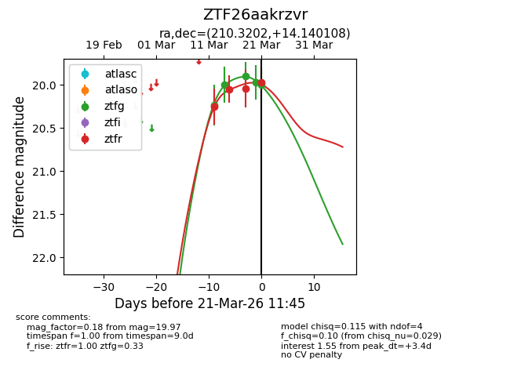
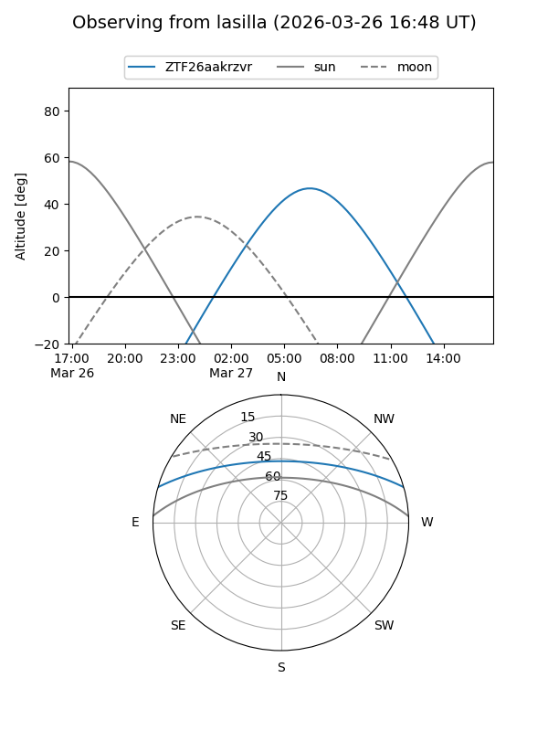
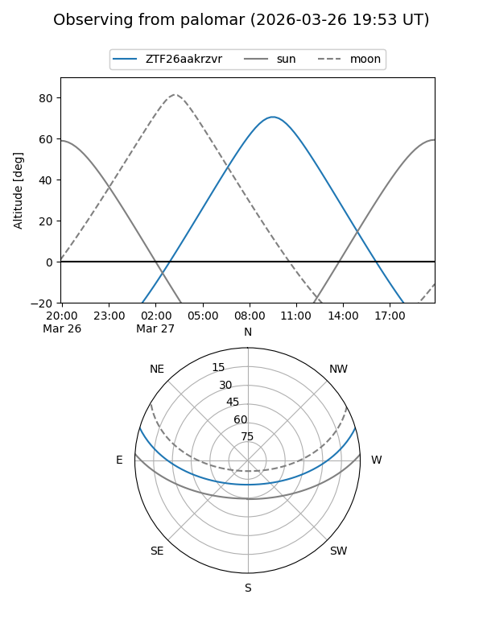
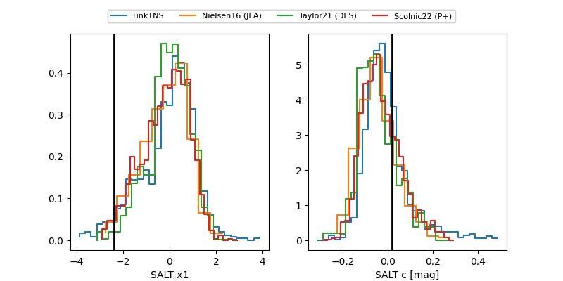

ZTF26aakrzvr
Target ZTF26aakrzvr at 2026-03-21 11:47
Aliases and brokers:
FINK: link
Lasair: link
ALeRCE: link
alt names
ZTF26aakrzvr (ztf,fink_ztf)
Coordinates:
equatorial (ra, dec) = 210.3202,+14.14011
equatorial (HMS+DMS) = 14:01:16.84,+14:08:24.39
galactic (l, b) = (357.8471,+69.17184)
Flags:
Photometry:
last ztfg=20.00, ztfr=19.97
4 ztfg, 4 ztfr detections
Lightcurve

Visibility


Additional plots
